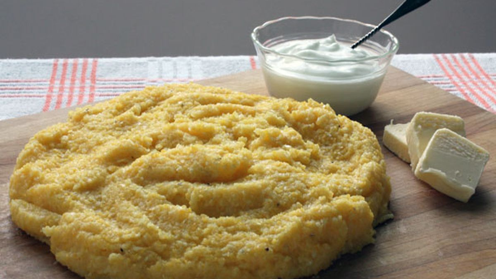

Mamaliga

Romania's delicious substitute for bread
Mămăligă is a porridge made out of yellow maize flour, traditional in
Romania, Moldova, Western Ukraine and among Poles in Ukraine, the Black
Sea regions.
Ingredients
- 1 cup of corn flower
- 1 tbs of salt
- 4 cups of water
- 2 tbs butter
Steps
-
Bring water and salt to a boil in a large saucepan; pour polenta slowly
into boiling water, whisking constantly until there are no lumps.
-
Reduce heat to low and simmer, whisking often, until polenta starts to
thicken, about 5 minutes. Polenta mixture should still be slightly
loose. Cover and cook for 30 minutes, whisking every 5 to 6 minutes.
When polenta is too thick to whisk, stir with a wooden spoon. Polenta is
done when texture is creamy and the individual grains are tender.
-
Turn off heat and gently stir 2 tablespoons butter into polenta until
butter partially melts; mix 1/2 cup Parmigiano-Reggiano cheese into
polenta until cheese has melted. Cover and let stand for 5 minutes to
thicken.
-
Stir polenta and transfer to a serving bowl. Top polenta with remaining
1 tablespoon butter.
Return Home